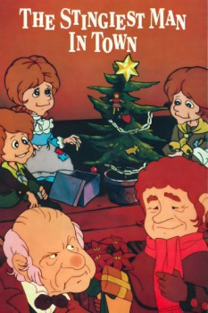

Country:United States, 50 minutes
Spoken languages:English
Genres:Animation, Fantasy, Family
Director(s):Arthur Rankin Jr., Jules Bass
Writer(s):Romeo Muller, Charles Dickens, Janice Torre
Video Codec:Unknown
Number: 104

Certification:
Storyline:
An animated adaptation of A Christmas Carol from Arthur Rankin Jr. and Jules Bass -- the duo behind some of the most enduring Christmas specials ever (including Rudolph the Red-Nosed Reindeer). Reinvented as a 49-minute musical, this charming cartoon stars the voice of Walter Matthau as the bedeviled Scrooge and Tom Bosley as the Jiminy Cricket-type narrator, B. Humbug, Esq. It features animation by Japanese studio Topcraft, known for their work on other Rankin/Bass films such as The Hobbit, The Flight of Dragons, and The Last Unicorn.
Cast:
Walter Matthau (voice of Ebenezer Scrooge), Tom Bosley (voice of B.A.H. Humbug), Theodore Bikel (voice of Marley's Ghost), Robert Morse (voice of Young Scrooge), Dennis Day (voice of Nephew Fred)
Medium: Media file,
Location: D:\$RECYCLE.BIN\$RP4ESGP\THe Stingiest Man in Town.mp4
Loaned: No
Aspect ratio: Unknown